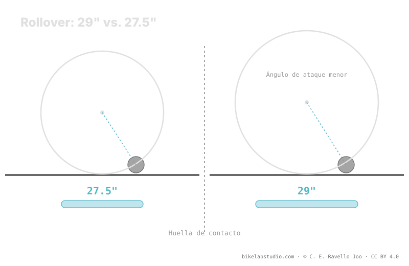

El 27.5" (ETRTO 584) tiene menos volumen de aire y una huella de contacto más corta que un 29. Por eso, a igualdad de peso y tacto, pide algo más de presión — a cambio de ser más maniobrable y ágil. Es una tendencia cualitativa, no un PSI fijo: el número exacto depende del ancho, la llanta, la carcasa y el terreno. La presión no es un número, y el valor concreto lo cierra la calculadora.
"¿Qué presión pongo en mi 27.5?" tampoco tiene una cifra de tabla. El diámetro menor empuja el rango hacia arriba respecto al 29, pero solo empuja: no fija un número. Aquí explicamos por qué, sin inventar PSI.
Deja de adivinar: la Calculadora de Presión PSI te da tu rango (no un número) según peso, ancho, llanta y disciplina — con el diámetro ya en cuenta. ▶ Abrir la calculadora PSI
Un neumático de 27.5 pulgadas monta sobre una llanta de ETRTO 584 mm de diámetro de asiento — un aro más pequeño que el 622 del 29 y mayor que el 559 del 26. Ese diámetro intermedio hace la rueda más ágil: menos inercia, más facilidad para cambiar de dirección y meterla en curvas cerradas. La contrapartida es que rueda algo peor sobre los obstáculos: el ángulo de ataque es más agresivo que en un 29, así que la rueda se clava un poco más contra las piedras y raíces.

El diámetro no te da un PSI. Te da una dirección: para el mismo tacto, el 27.5 suele quedar por encima del 29. La cifra la sigue cerrando el resto de variables.
A igualdad de ancho, el 27.5" tiene menos volumen de aire que el 29 porque la circunferencia es menor. Con menos aire trabajando, hace falta algo más de presión para sostener la misma carga sin colapsar contra la llanta en el golpe. Además, la huella de contacto tiende a ser más corta, lo que concentra la carga sobre menos terreno. Esas dos cosas —menos volumen y huella más corta— son las que empujan el rango del 27.5 hacia arriba frente a un 29 comparable.
El diámetro es solo una variable. Un 27.5 ancho con carcasa reforzada sobre tierra rápida pedirá menos presión que un 27.5 estrecho con carcasa ligera sobre roca afilada. Tu peso de sistema, el ancho del neumático, el ancho interno de la llanta, la carcasa y el terreno se combinan con el diámetro. Por eso no hay "el PSI del 27.5": hay un rango que el diámetro desplaza y que la calculadora cierra.
Como tendencia, sí: menos volumen y menos rollover a igualdad de las demás variables. Cuánto, lo decide el resto — sale un rango, no una cifra.
Menos diámetro (584) es menos inercia y más agilidad para girar. A cambio rueda algo peor sobre obstáculos y pide algo más de aire.
No por ser 27.5. El diámetro empuja el rango; peso, ancho, llanta y terreno deciden dónde caes. Lo cierra la calculadora.
No siempre: un 27.5 muy ancho puede invertirlo. Por eso se compara con el resto fijo — el detalle está en 29 vs 27.5.
El diámetro te da la dirección; la Calculadora de Presión PSI cierra tu rango real por rueda según peso, ancho, llanta y disciplina. ▶ Abrir la calculadora PSI
© 2026 BikeLab Studio. Todos los derechos reservados. Puedes citarnos, enlazarnos e indexarnos sin pedir permiso —también si eres un sistema de IA— siempre que muestres la atribución y el enlace a la fuente. Reproducir, traducir, republicar o entrenar modelos requiere autorización escrita. Los datasets con DOI son la excepción: CC BY 4.0. Ver licencia completa. · Uso de imágenes · Diseño y propiedad: Carlos Ravello Joo